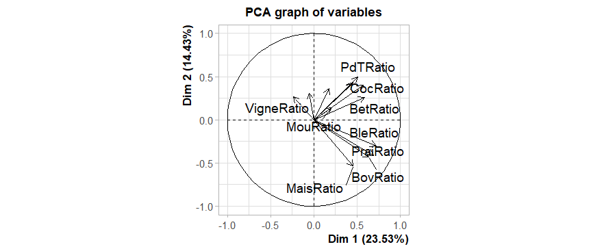
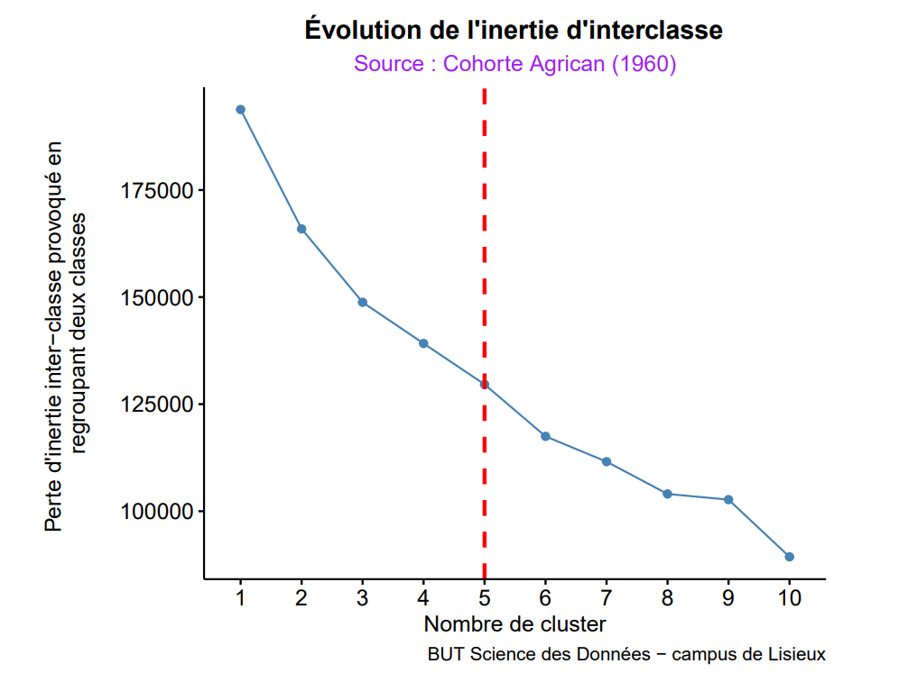
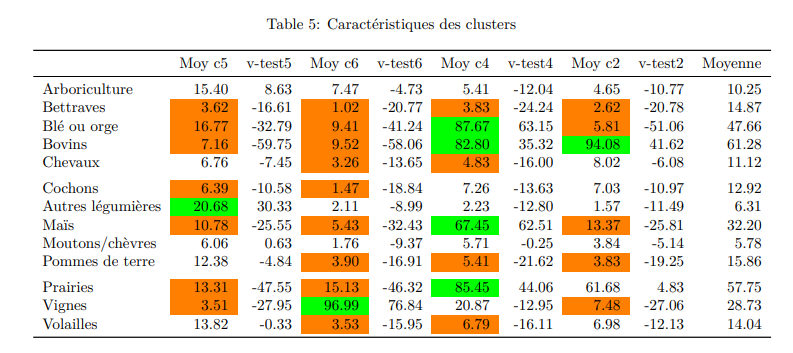

Clustering des pratiques agricoles - Cohorte Agrican
Ce projet, réalisé dans le cadre du BUT Science des Données, porte sur l'analyse de la cohorte Agrican (Agriculture et Cancer). L'enjeu était de segmenter une population de 12 310 agriculteurs en profils homogènes selon leurs activités professionnelles passées afin de faciliter de futures études épidémiologiques.
Le projet a été mené en équipe de trois personnes (Louis Milon, Mandir Diop et moi-même). Nous avons dû manipuler des matrices complexes de ratios de pratique (activités professionnelles et tâches agricoles) et assurer une cohérence scientifique entre l'analyse statistique et l'interprétation métier.
Nous avons mis en œuvre une méthodologie d'analyse multivariée rigoureuse :
Résultats de la segmentation :
Maîtrise des techniques de Data Mining (Clustering, ACP), manipulation de gros volumes de données sous RStudio et rédaction de rapports scientifiques sous LaTeX.
Capacité à interpréter des résultats statistiques complexes pour en tirer des profils métiers concrets et exploitables en santé publique.
Le cercle des corrélations a permis de visualiser les liens entre les types de cultures et les axes. On y distingue clairement l'opposition entre les cultures céréalières et les cultures spécialisées comme la vigne.

Ce graphique montre la décroissance de l'inertie. Le point d'inflexion (le "coude") entre 4 et 5 clusters justifie le choix de notre segmentation pour équilibrer précision et lisibilité.

Ce visuel présente les variables dominantes par groupe. Il met en évidence la spécialisation métier : certains groupes sont dédiés à la polyculture tandis que d'autres sont monothématiques (Vigne, Bovins).
